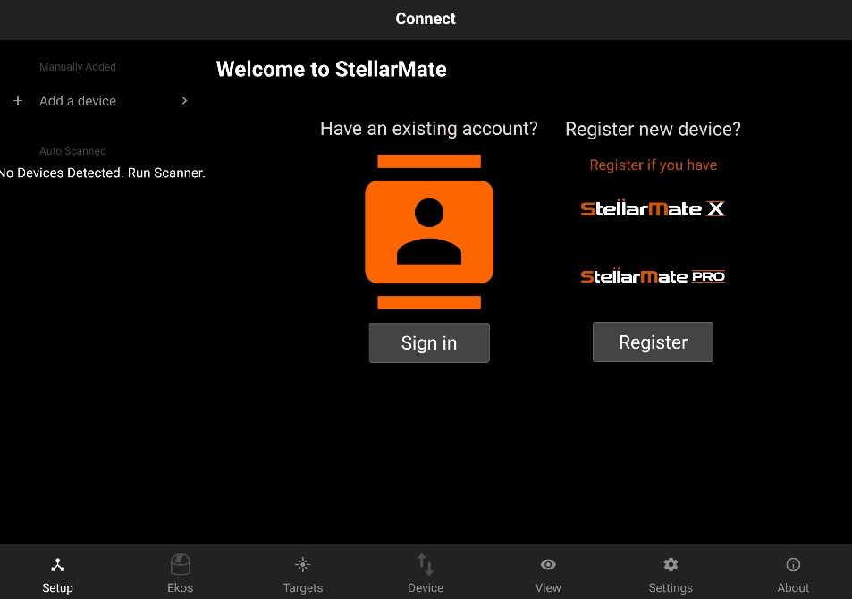

Registration
When using StellarMate App for the first time, you need to register your device, or sign in using your existing stellarmate.com credentials:
- StellarMate X: If you purchased an SM X or SM Pro device, you need to register the device first before proceeding. Click on the Register button and then follow the on screen guide.
- StellarMate OS: If you purchased StellarMate OS, or already have registered the device before, you can simply sign in using your stellarmate.com username and password. Beware that you must be connected to the internet for the initial sign in to proceed. After sign in is successful, no internet connection is required and you can switch network to StellarMate hotspot if desired.

|
IMPORTANT |
|
|
|
The StellarMate Mobile App requires a QR Code (on the back of StellarMate Controller) in order to operate the StellarMate Controller. NO registration is required to use the StellarMate Controller if you intend to use it directly via Web or via Ekos client on Mac/PC/Linux. This step is only required if you want to use the StellarMate Mobile App. You can continue to use StellarMate as is, including accessing the Web Manager and VNC: Web Manager URL: http://stellarmate.local:8624 Web VNC URL: http://stellarmate.local:6080 |